在目前计算机中，主流的颜色混合方案为线性相加，线性减弱。近期正好在研究一些水彩渲染相关，探索发现到2021年已有前人在siggraph上实现了水彩渲染，于是乎结合AI 做了次机器学习自然颜色混合渲染测试。.
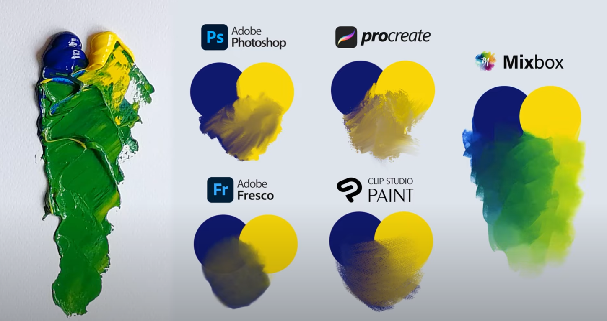
一、颜色混合
1.1 常见的颜色混合方案
常见的颜色混合在计算机中主要是线性叠加和线性相减的方法进行颜色混合。
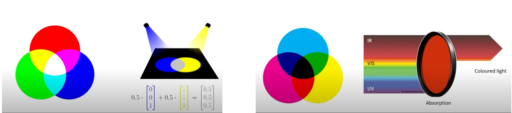
其中线性叠加代表物理意义上光的相加，线性减弱代表着物理意义上光的吸收。但在现实生活中，蓝色和黄色的颜料混合会变成绿色，而使用线性叠加，相减等方法均不能很好的表示该效果。
为了实现水彩混合的效果，2021年的一篇siggraph使用离线烘培的技术初步实现了计算机中模拟水彩混合的效果mixbox。但在开始介绍mixbox之前，还需要介绍下mixbox的前身和相关技术发展
1.2 Mixbox 方案之前
早在1931年，就已经有学者意识到颜料混合后产生的颜色效果，当时Kubelka-Munk 学者提出了Kubelka-Munk 模型，就初步解释了蓝色与黄色混合后出现绿色的现象：
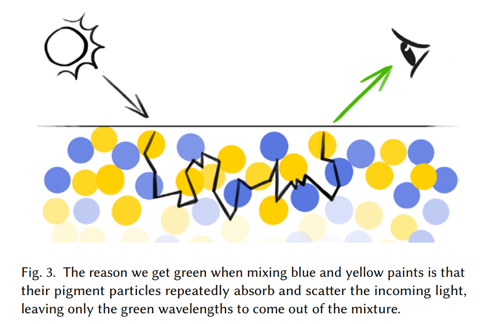
人眼能看到混合后为绿色，是因为光照射到混合颜料后发生光线散射与吸收，从而实现了反射为绿色的效果。但在之后的计算机中却一直未能完成落地，原因其实有一下三点：
- Kubelka-Munk模型（以下简称KM模型）需要对入射到颜料中的光线进行实时次表面散射的模拟，较难做到实时效果。
- KM模型需要多通道进行颜色模拟才能得到效果，而主流软件都是使用RGB三色通道来进行颜色混合，较难兼容。
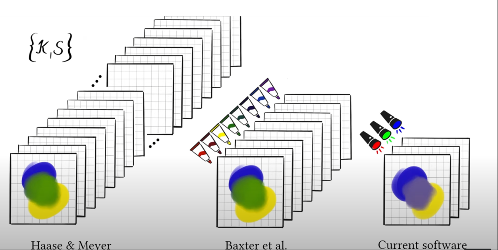
正因为如此，该效果一直未能在计算机中模拟实现。直到2021年，mixbox团队创新性的使用了半离线的方法解决了该问题。
1.3 Mixbox 方案
Mixbox团队 在 KM模型 模型的基础上，通过分析多通道的方式，设计了以下方法实现：
将RGB颜色转换到由四种颜色组成的更大色域空间
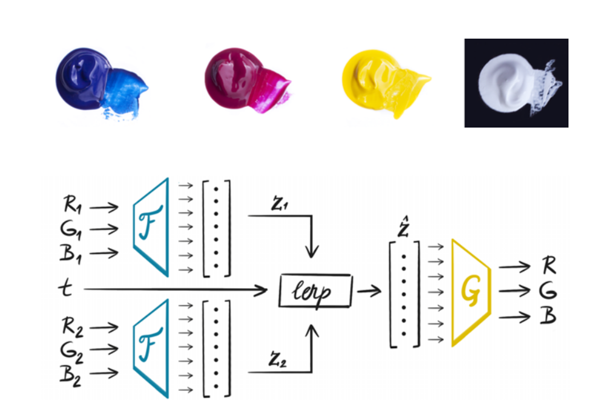通过算法在更大的色彩空间中进行颜色混合并对
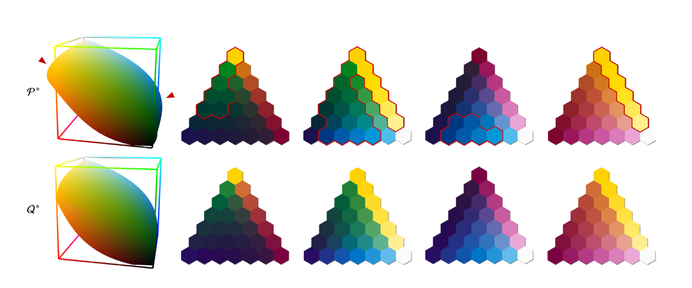将混合后的颜色转换回RGB的颜色通道中。
由于实时计算性能消耗较大， mixbox团队使用预烘焙lut图的方式，查表优化计算速度，最终实现了在计算机中实现自然颜色混合的效果。
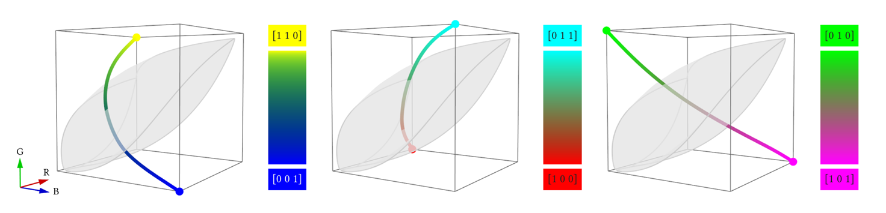
上图为经过mixbox团队混合后的颜色过渡曲线。
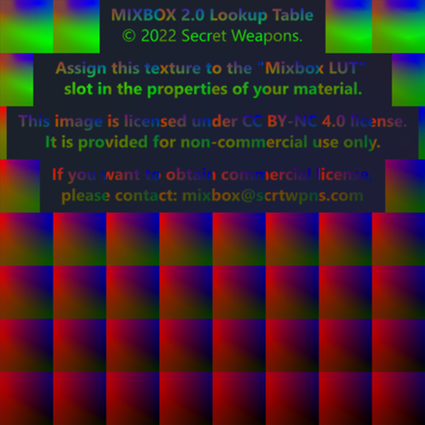
上图为mixbox预烘焙后的lut图
Mixbox团队在使用lut图等预烘焙技术实现了一个表现优秀的自然颜料混合效果。
可以看到Mixbox团队使用大量真实数据，基于KM模型，拟合出自然颜色混合后的颜色过渡曲线，同时使用预烘培技术，将复杂的拟合过程改用采样的方式实现，最终达到实时的效果。
不过该技术目前也存在一定的带宽压力，lut图大小为48M，对于多平台的表现来讲可能会涉及到性能优化的一定问题，故在分析思考后针对mixbox的实现原理分析后发现可以使用机器学习的方式优化颜色混合曲线从而实现该效果。
二、自然颜色混合的机器学习拟合方案
通过分析可以看到，mixbox团队通过lut图及相关算法实现了对两个颜色混合过渡的曲线拟合。通过机器学习的方式利用游戏引擎制作数据集后做监督学习算法，从而实现多项式拟合色彩混合曲线，实现自然颜色混合的效果。
2.1 数据集准备
由于mixbox官方lut图存在版权限制，不能正常在外部调用，但官方在提供的github工程中分享了Unity解码工程，可以在Unity中调用mixbox官方库实现自然颜色混合的shader效果。故这边通过调用unity的示例工程获取机器学习所需数据集：
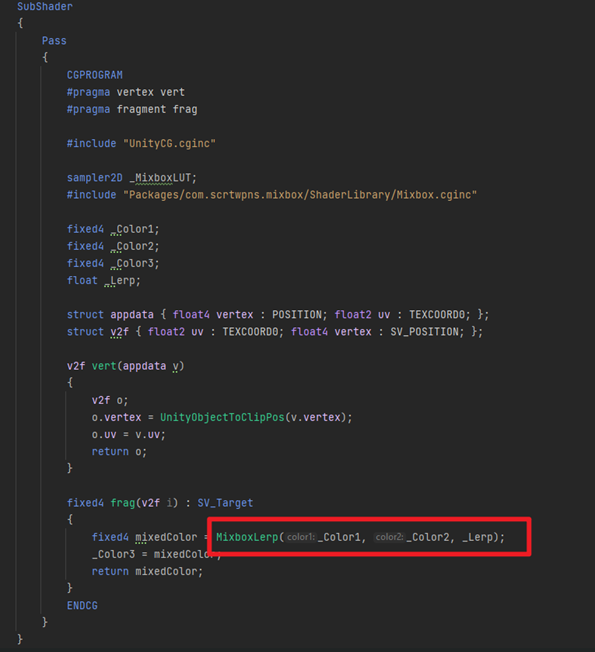
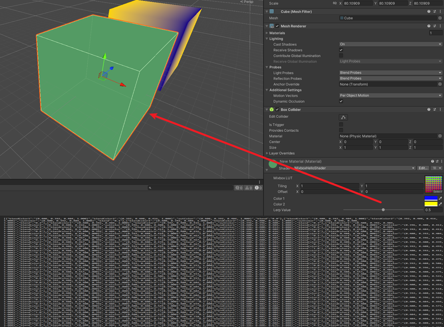
2.2 算法部分
算法部分使用sklearn 包，通过chatgpt直接生成多项式回归的算法来实现。
2.3 训练
训练部分通过前面生成的算法直接到python中进行训练，得到多项式的系数与表达式。
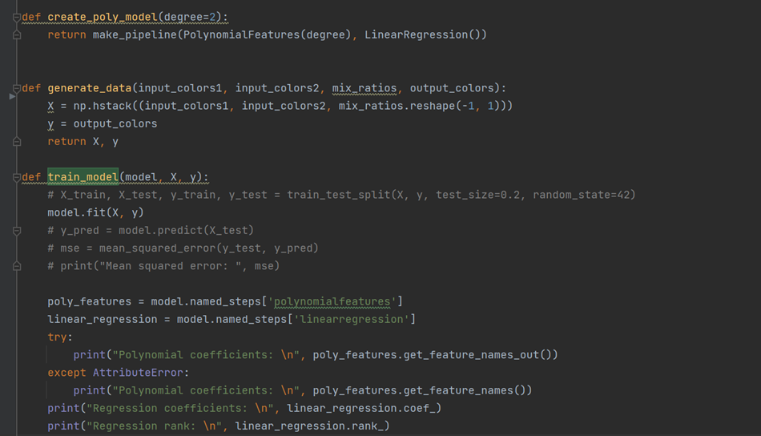
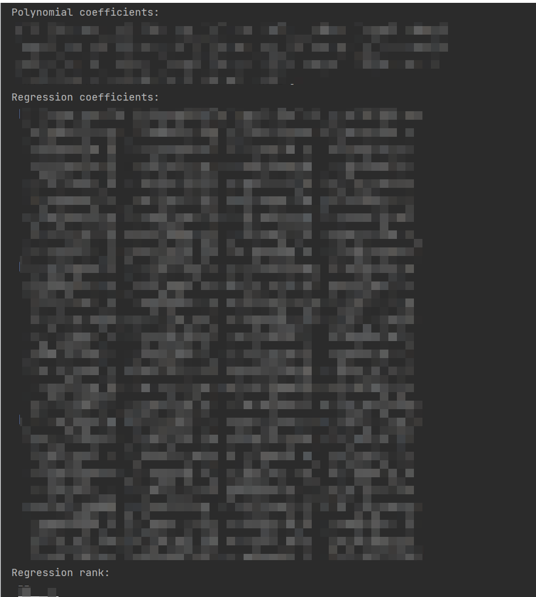
2.4 调优
由于Unity中默认工程用的是Linear空间的颜色，在UE中把颜色从gamma 转回 Linear 还原回原来的颜色，最终将前面计算得到的多项式方程通过Unreal 的custom node节点写入到材质中：
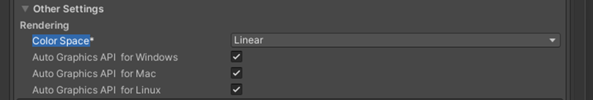
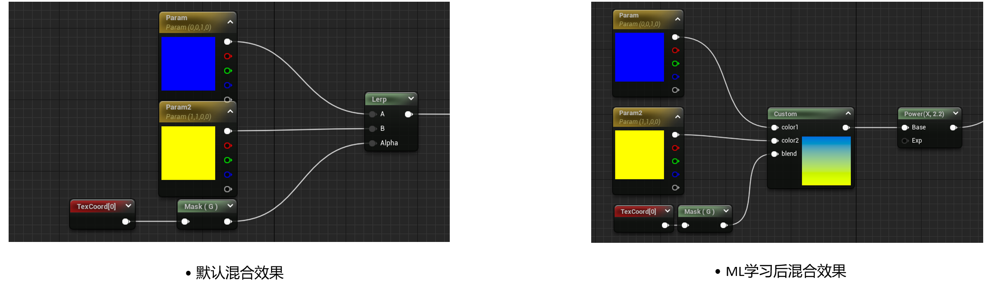
2.5 引擎内效果对比
给定相同颜色进行混合后，对比传统的线性混合，经过机器学习拟合后的颜色混合曲线更好地展现出了水彩混合的效果
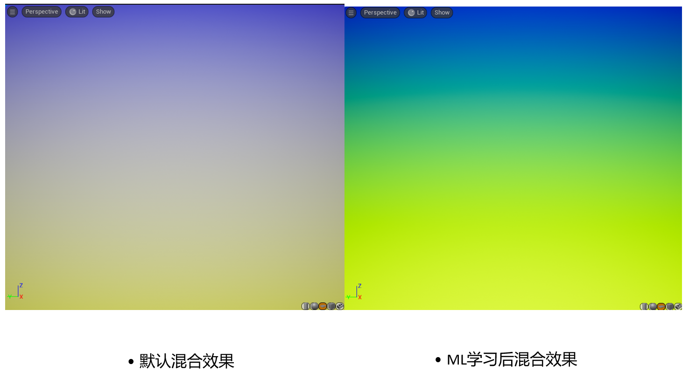
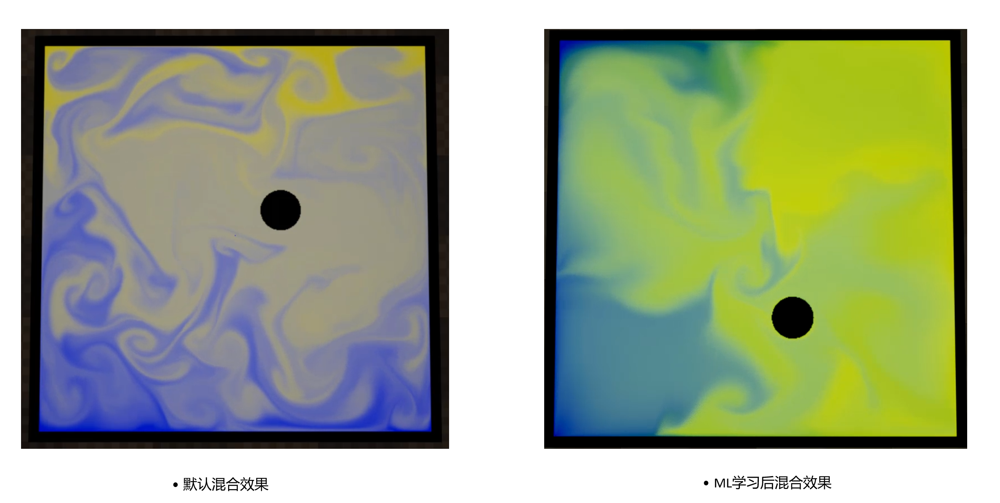
演示视频：[https://www.zhihu.com/zvideo/1722285976427261952]https://www.zhihu.com/zvideo/1722285976427261952
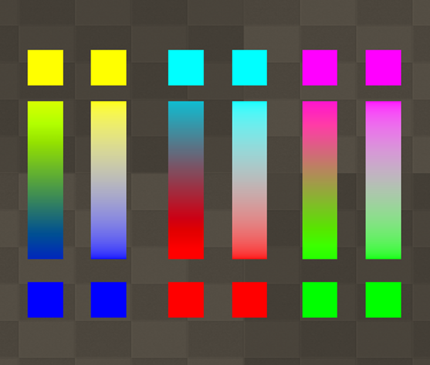•左为机器学习后混合效果，右为传统lerp混合效果
三、总结
从实验结果上看，虽有初步接近自然颜料混合的效果，但仍存在色相饱和度未完全匹配的问题。后续可再通过优化算法，增加数据集等方式迭代优化。
四、参考
•ChatGPT https://openai.com/
•官方论文 https://scrtwpns.com/mixbox.pdf
•Mixbox 网址 https://scrtwpns.com/mixbox/
•Siggraph Talk https://www.youtube.com/watch?v=_qa5iWdfNKg